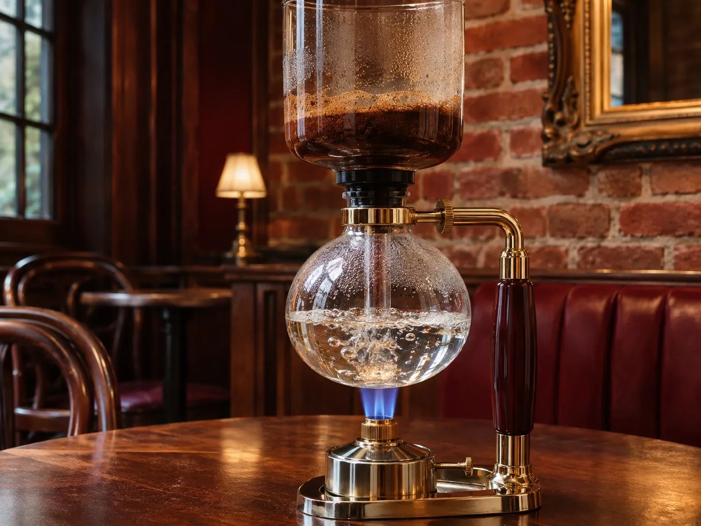

CONCEPT
焙煎の香りの中で、
ゆっくり一杯
cafe de chefは、豊田市挙母町にある、30年以上つづく自家焙煎コーヒーの老舗カフェです。 「コーヒーを通して、お客様に癒しと幸せな時間を」を大切にしています。
Double roast, deep roast
創業から深煎り。一度ゆっくり煎ってから仕上げるダブル焙煎で、2〜3日で使いきる分だけを店内で焙煎しています。
焙煎した香りの中でコーヒーを飲む時間 公式Instagramより
焙煎しているときは、香りがお店じゅうに広がります。サイフォンで香り高く淹れる一杯や、手づくりのケーキと一緒に、ゆっくり過ごせるお店です。
